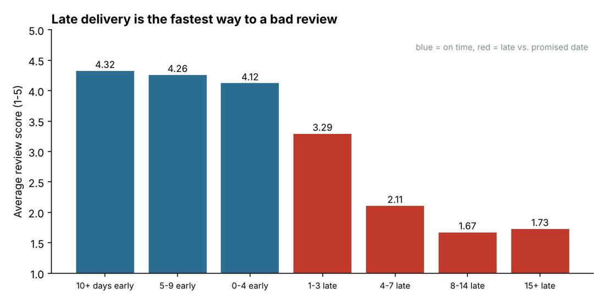

Who Buys, Who Comes Back, and What Drives Bad Reviews
I built a SQL star schema from six raw tables (96K delivered orders, 93K customers), segmented customers with RFM scoring, tracked cohort retention, and estimated how late deliveries affect review scores using category, state and month fixed effects.
97.8%of customers buy only once
4.2%of revenue from repeat buyers
−1.2 starseffect of a late delivery
+33 ppchance of a 1–2 star review
